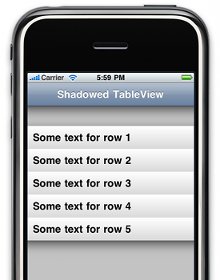

Please note: this article is part of the older "Objective-C era" on Cocoa with Love. I don't keep these articles up-to-date; please be wary of broken code or potentially out-of-date information. Read "A new era for Cocoa with Love" for more.
Adding shadow effects to UITableView using CAGradientLayer
Shadows can be a useful effect, drawing attention to the content of your view by separating the view from the background. They also look cool. In this post, I'll show you how to add shadows to a UITableView using three CAGradientLayers — one above the first row, one after the last row and one for under the navigation bar.
ShadowedTableView app
In this post, I'll present the following sample app:
In this screenshot, the rows are dragged downwards to reveal the three different shadows: under the navigation bar, above the first row and under the last row.
Download the sample project ShadowedTableView.zip (26kB). Last updated 2009-08-23.
CAGradientLayer
The CAGradientLayer was a handy addition in iPhone SDK 3.0 — it allows you to create an efficient, linear gradient in just a couple lines. In this sample app, is it used to draw the opaque gradients on the table rows as well as the transparent gradients of the shadows.
While not as flexible as CGContextSetShadow (which can draw shadows around multiple shapes simultaneously or curved edges), CAGradientLayer is very fast, so it shouldn't have a noticeable effect on the speed of your application.
Since CAGradientLayer requires iPhone SDK 3.0, if you need a similar effect on earlier versions of iPhone OS, you'll need to use CGGradientCreateWithColorComponents to draw the contents of a CALayer yourself or perhaps use a UIImageView (an image view is another alternative if you need non-straight edges).
Required steps
Adding the shadows can be done using a UITableView subclass. In this subclass, we need to perform the following steps:
- Create the three
CAGradientLayers - Place them and make sure they stay underneath the table's rows
- Update the positions of the gradients when the table scrolls or grows
We can perform all these steps by overriding the layoutSubviews method.
Constructing the gradients
The construction of the CAGradientLayers is done lazily (i.e. as needed) in layoutSubviews (removing the need to override any constructors.
The three gradients are all constructed using the following method. The inverse parameter is used to generate the smaller gradient that fades-out upwards (for the shadow above the first table row).
- (CAGradientLayer *)shadowAsInverse:(BOOL)inverse
{
CAGradientLayer *newShadow = [[[CAGradientLayer alloc] init] autorelease];
CGRect newShadowFrame =
CGRectMake(0, 0, self.frame.size.width,
inverse ? SHADOW_INVERSE_HEIGHT : SHADOW_HEIGHT);
newShadow.frame = newShadowFrame;
CGColorRef darkColor =
[UIColor colorWithRed:0.0 green:0.0 blue:0.0 alpha:
inverse ? (SHADOW_INVERSE_HEIGHT / SHADOW_HEIGHT) * 0.5 : 0.5].CGColor;
CGColorRef lightColor =
[self.backgroundColor colorWithAlphaComponent:0.0].CGColor;
newShadow.colors =
[NSArray arrayWithObjects:
(id)(inverse ? lightColor : darkColor),
(id)(inverse ? darkColor : lightColor),
nil];
return newShadow;
}Notice that the gradient goes from 50% black to 0% of the table's background color. It is important to use the table's actual background color, even though it may seem as though the 0% opacity on it would make it invisible. The mathematics of the gradient will cause the middle color to be 12.5% black + 12.5% background color, so the background color does have an effect on the gradient.
Placing the gradients
The simplest gradient to place is the one under the navigation bar — we just put it at the top of the UITableView.
The only tricky part is that the view, as a child of the UITableView will scroll downwards when the view scrolls (we want it to stay still and not scroll). To fix this issue, we'll offset the view by the same amount as the scroll offset (to keep it in place) and perform this frame adjustment inside a CATransaction with animation disabled (so that these offsets are not visible).
[CATransaction begin];
[CATransaction setValue:(id)kCFBooleanTrue forKey:kCATransactionDisableActions];
//
// Stretch and place the origin shadow
//
CGRect originShadowFrame = originShadow.frame;
originShadowFrame.size.width = self.frame.size.width;
originShadowFrame.origin.y = self.contentOffset.y;
originShadow.frame = originShadowFrame;
[CATransaction commit];The gradients on the rows are a little trickier. First, we only want to add them if the rows are visible. Second, we want to make them child layers of their respective rows so that if the rows animate, the shadows will follow them.
Update 2009-08-23: adding the shadows as children of the cells themselves is a new addition to improve performance during animation from the original post (which arranged the rows directly in the UITableView.
NSIndexPath *firstRow = [indexPathsForVisibleRows objectAtIndex:0];
if ([firstRow section] == 0 && [firstRow row] == 0)
{
UIView *cell = [self cellForRowAtIndexPath:firstRow];
if (!topShadow)
{
topShadow = [[self shadowAsInverse:YES] retain];
[cell.layer insertSublayer:topShadow atIndex:0];
}
else if ([cell.layer.sublayers indexOfObjectIdenticalTo:topShadow] != 0)
{
[cell.layer insertSublayer:topShadow atIndex:0];
}
CGRect shadowFrame = topShadow.frame;
shadowFrame.size.width = cell.frame.size.width;
shadowFrame.origin.y = -SHADOW_INVERSE_HEIGHT;
topShadow.frame = shadowFrame;
}
else
{
// Remove the shadow if it isn't visible
[topShadow removeFromSuperlayer];
[topShadow release];
topShadow = nil;
}This is the placement of the top shadow (the one above the first row). We only attend to it if the first row is visible and when we do, we always ensure that it is the 0-th sublayer of the appropriate cell.
Other tidbits
The sample project also contains the GradientView class which is a very simple subclass of UIView that sets the UIView's layerClass to CAGradientLayer and uses that to draw a gradient across the view. This is the view that is set as the UITableViewCell's backgroundView to draw the views in this sample project.
The project also contains the ClearLabelsCellView which is a UITableViewCell subclass that overrides setSelected:animate: to fix the fact that this method always sets the default textLabel and detailTextLabel backgroundColor to white — instead setting it to clearColor so you can combine the default text labels with non-white cell backgrounds.
- (void)setSelected:(BOOL)selected animated:(BOOL)animated
{
[super setSelected:selected animated:animated];
self.textLabel.backgroundColor = [UIColor clearColor];
self.detailTextLabel.backgroundColor = [UIColor clearColor];
}Conclusion
Download the sample project ShadowedTableView.zip (26kB). Last updated 2009-08-23.
The ShadowedTableView is self-contained so you can drop it easily into a project.
In its current form, it only works well for full-width, rectangular, contiguous tables — so it works well for "plain" tables but is not suited to "grouped" tables. It also looks best if the table row separator is set to "none".
Animating a window to fullscreen on the Mac
StreamToMe iPhone App Released